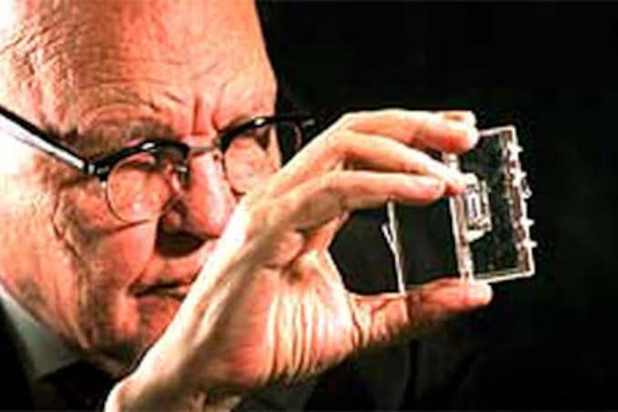
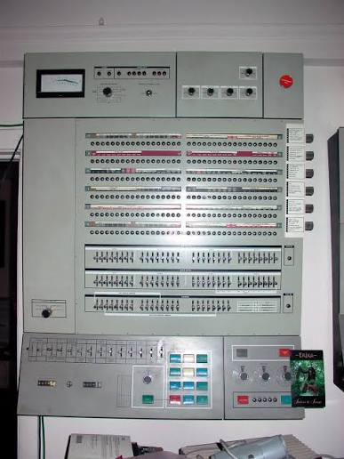
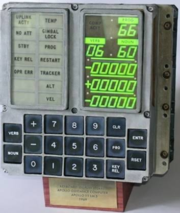
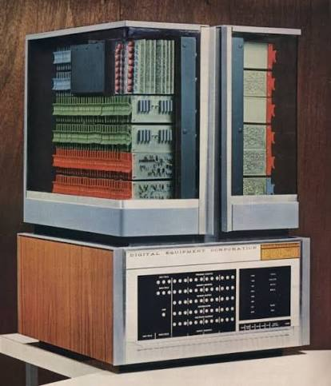
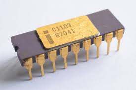
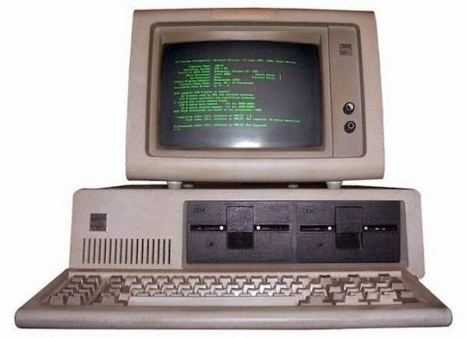

TERCERA GENERACION DE COMPUTADORAS (1964 - 1971) - Estudio tecnico e historico exhaustivo sobre la invencion de los circuitos integrados de silicio, la arquitectura de la familia IBM System/360, la computadora de navegacion del Apolo, las minicomputadoras, el nacimiento de la memoria DRAM, los sistemas operativos con multiprogramacion, el lenguaje C, UNIX y los origenes de ARPANET.

1. Que fue la Tercera Generacion y la Crisis de la Tirania de los Numeros - Entre los anos 1964 y 1971 la industria computacional experimento una metamorfosis determinante con el nacimiento y produccion masiva del circuito integrado (chip de silicio), tecnologia que reemplazo el cableado y soldado de componentes electronicos individuales sobre placas de baquelita. Hacia finales de la decada de 1950, los ingenieros de hardware habian chocado contra un obstaculo critico conocido como la tirania de los numeros: a medida que los ordenadores requerian mayores capacidades aritmeticas y de memoria, era necesario conectar manualmente cientos de miles de transistores individuales, resistencias y condensadores. Esta acumulacion provocaba millones de puntos de soldadura manual susceptibles a agrietarse o provocar falsos contactos que inutilizaban maquinas enteras, al tiempo que la longitud fisica de los cables intermedios limitaba la velocidad de propagacion de las senales electricas a la velocidad de la luz. La integracion de componentes resolvio esta barrera fisica al construir simultaneamente sobre una pastilla solida milimetrica de material semiconductor tanto los transistores como los componentes pasivos y sus pistas conductoras, multiplicando por mil la velocidad de calculo, reduciendo el consumo electrico a una fraccion y elevando la fiabilidad del hardware a niveles industriales.
2. La Invencion del Circuito Integrado Monolitico y la Ley de Moore - El circuito integrado fue desarrollado independientemente por dos cientificos estadounidenses: en septiembre de 1958, Jack St. Clair Kilby en Texas Instruments construyo el primer circuito integrado funcional utilizando una delgada laminilla de germanio en la que integro un oscilador con un transistor, resistencias y condensadores unidos mediante microalambres de oro voladizos (circuito hibrido), logro fundamental por el que Kilby recibio el Premio Nobel de Fisica en el ano 2000. Paralelamente, en enero de 1959, Robert Noyce en Fairchild Semiconductor invento el circuito integrado monolitico plano sobre silicio: basandose en el proceso planar ideado por el fisico suizo Jean Hoerni (que protegia la oblea con una capa superficial de dioxido de silicio y abria ventanas quimicas mediante fotolitografia para difundir impurezas de boro y fosforo), Noyce empleo peliculas evaporadas de aluminio para trazar las interconexiones metalicas directamente sobre la superficie del chip, eliminando cables voladizos y permitiendo cortar miles de pastillas identicas de una sola oblea de silicio. Durante esta etapa se atravesaron dos escalas de integracion: SSI (Small Scale Integration, con menos de 100 transistores por chip) y MSI (Medium Scale Integration, con entre 100 y 1.000 componentes por chip). En abril de 1965, Gordon Moore, director de investigacion de Fairchild y cofundador de Intel, publico un celebre articulo en la revista Electronics donde formulo la Ley de Moore, anticipando que el numero de componentes por circuito integrado con el costo minimo de produccion se duplicaria anualmente (corregido posteriormente a cada dos anos), ley empirica que dicto el ritmo de la revolucion microelectronica durante mas de medio siglo.

3. La Revolucion del IBM System/360 y la Compatibilidad de Software - El 7 de abril de 1964, International Business Machines (IBM), presidida por Thomas J. Watson Jr., presento la familia IBM System/360, una jugada corporativa colosal que exigio una inversion superior a los cinco mil millones de dolares de la epoca. Antes del System/360, cada modelo producido por un fabricante tenia una arquitectura incompatible: utilizaba su propio juego de instrucciones, sus propios perifericos y requeria que el software fuera reprogramado desde cero cuando una empresa crecia y adquiria una maquina superior. Liderado en su diseno arquitectonico por Gene Amdahl, Frederick Brooks y Bob Evans, el System/360 unifico la industria al ofrecer una familia compatible de modelos (desde el economico Modelo 30 hasta el potente Modelo 75) que compartian una misma Arquitectura de Conjunto de Instrucciones (ISA). El System/360 consolido estandares universales que perduran en la informatica actual: fijo el byte como una unidad de exactamente 8 bits (un octeto), abandono las palabras heterogeneas de generaciones previas, establecio palabras de 32 bits con dieciseis registros generales, introdujo el direccionamiento de memoria por byte, estandarizo el sistema de codificacion alfanumerico EBCDIC y la notacion hexadecimal, e incorporo los modulos Solid Logic Technology (SLT), consistentes en microchips de silicio montados sobre sustratos ceramicos de media pulgada. Asimismo, desarrollo el sistema operativo OS/360, uno de los proyectos de software mas complejos de la historia que introdujo la multiprogramacion con particiones de memoria (MFT y MVT) para mantener la CPU permanentemente ocupada ejecutando varios programas en paralelo mientras gestionaba operaciones de entrada y salida con discos y cintas magneticas.

4. El Apollo Guidance Computer (AGC) y la Llegada a la Luna - El mayor testimonio historico de la fiabilidad de la tercera generacion fue la computadora de guia y navegacion del programa Apolo (Apollo Guidance Computer o AGC), desarrollada a partir de 1962 por el Laboratorio de Instrumentacion del MIT bajo la direccion de Charles Stark Draper y Eldon Hall. La NASA fue el principal catalizador de la industria de semiconductores en sus inicios, llegando a comprar en 1963 mas del sesenta por ciento de toda la produccion nacional de circuitos integrados de los Estados Unidos para garantizar el diseno del AGC. La computadora monto unos 2.800 chips identicos planos fabricados por Fairchild Semiconductor, cada uno conteniendo compuertas logicas NOR dobles de tres entradas mediante logica RTL, con una memoria de solo lectura tejida a mano con hilos y nucleos de ferrita (core rope memory) de 36 kilopalabras de 16 bits y una memoria RAM de ferrita de 2 kilopalabras, funcionando a una frecuencia de 1,024 MHz. El desarrollo de software del AGC estuvo a cargo de la matematica y cientifica computacional Margaret Hamilton (quien popularizo el termino Ingenieria de Software): Hamilton diseno un sistema operativo pionero de tiempo real asincrono con planificacion por prioridades. Este diseno demostro ser decisivo el 20 de julio de 1969 durante el descenso sobre el Mar de la Tranquilidad del Apolo 11: debido a un error de procedimiento en la lista de verificacion de la tripulacion, el radar de acoplamiento se dejo encendido en un modo incorrecto que inundaba la computadora con interrupciones espurias de hardware, disparando las alarmas de sobrecarga 1201 y 1202; el sistema operativo de Hamilton detecto la saturacion de ciclos de reloj, suspendio de inmediato las tareas secundarias del radar y mantuvo sin interrupciones los calculos criticos de aceleracion y empuje del motor de descenso, permitiendo que Neil Armstrong y Buzz Aldrin alunizaran a salvo con escasos segundos de combustible en el tanque.

5. La Revolucion de las Minicomputadoras: El DEC PDP-8 - Mientras los grandes mainframes de IBM demandaban presupuestos de cientos de miles de dolares y amplias salas acondicionadas accesibles solo a consorcios multinacionales y agencias militares, la integracion de componentes propicio el nacimiento de las minicomputadoras. El 22 de marzo de 1965, la corporacion Digital Equipment Corporation (DEC), fundada por Ken Olsen, lanzo al mercado el PDP-8, disenado por el ingeniero Edson de Castro: con un precio de solo 18.000 dolares (una decima parte de un mainframe tradicional) y un bus de datos unificado llamado Omnibus, el PDP-8 era un computador de 12 bits lo bastante compacto como para instalarse sobre un banco de trabajo o en un bastidor metalico industrial estandar de 19 pulgadas sin aire acondicionado especial. El PDP-8 supero las cincuenta mil unidades vendidas en todas sus variantes, convirtiendose en el primer computador de produccion masiva que penetro directamente en departamentos universitarios, laboratorios de bioanalisis, observatorios astronomicos y plantas de manufactura para adquisicion automatica de datos en tiempo real y control de maquinaria industrial.

6. El Nacimiento de la Memoria DRAM y el Fin de los Nucleos de Ferrita - Hasta fines de los anos sesenta, la memoria principal de todas las computadoras dependia exclusivamente de las memorias de nucleos de ferrita, cuyo ensamble artesanal mediante obreras que tejian anillos ferromagneticos a mano representaba el componente mas caro y voluminoso del hardware. En 1968, el cientifico Robert Dennard invento en el Centro de Investigacion Thomas J. Watson de IBM la celda de Memoria Dinamica de Acceso Aleatorio (DRAM), demostrando que un bit de datos podia almacenarse temporalmente mediante la carga electrostatica de un unico condensador diminuto controlado por un solo transistor de efecto de campo de compuerta aislada (MOSFET), en lugar de los seis transistores requeridos por la memoria RAM estatica. En octubre de 1970, la recien fundada corporacion Intel comercializo el chip Intel 1103: un circuito integrado monolitico de memoria DRAM de 1.024 bits (1 kilobit) empaquetado en plastico y silicio que demostro ser sustancialmente mas barato, veloz y compacto que cualquier red de ferrita, expulsando a la memoria magnetica de los ordenadores en cuestion de meses y estableciendo la hegemonia absoluta de los chips semiconductores de memoria en la industria mundial.
7. Software de la Tercera Generacion: UNIX, Lenguaje C, ARPANET y la Crisis del Software - El abrumador avance de la circuiteria provoco una brecha critica con la calidad del software: en octubre de 1968, la conferencia de la OTAN en Garmisch (Alemania) acuno formalmente el termino crisis del software para describir el fracaso cronico de los proyectos de programacion, que sistematicamente sobrepasaban sus presupuestos, sufrian anos de demoras inaceptables y presentaban fallos de diseno impredecibles. Para remediarlo, la comunidad cientifica forjo la disciplina de la Ingenieria de Software, encabezada por Edsger Dijkstra (quien en marzo de 1968 publico su historico ensayo Go To Statement Considered Harmful, demostrando que la instruccion GOTO originaba codigo ininteligible de espagueti y sentando las bases de la programacion estructurada con bucles y secuencias modulares) y Niklaus Wirth (creador de Pascal en 1970). Simultaneamente, entre 1969 y 1971, los investigadores Ken Thompson, Dennis Ritchie, Brian Kernighan y Douglas McIlroy en los Laboratorios Bell de AT&T desarrollaron en una computadora PDP-7 el sistema operativo UNIX: UNIX introdujo una filosofia pragmatica de diseno basada en herramientas pequenas y modulares comunicadas mediante tuberias (pipes), un sistema de ficheros jerarquico en arbol y el principio de tratar todos los dispositivos y flujos de datos como archivos de texto simples. Para que el sistema fuera plenamente portable, Dennis Ritchie diseno entre 1971 y 1972 el lenguaje de programacion C a partir del lenguaje B de Thompson; cuando el nucleo de UNIX fue reescrito enteramente en C en 1973, se convirtio en el primer sistema operativo universal transportable entre arquitecturas dispares de hardware. Paralelamente, en octubre de 1969, la agencia DARPA activo la red ARPANET, estableciendo mediante nodos IMP (Interface Message Processor) de Honeywell la primera comunicacion de conmutacion de paquetes entre la Universidad de California en Los Angeles (UCLA) y el Stanford Research Institute (SRI), encendiendo los protocolos que darian nacimiento a la Internet global antes de que la invencion del microprocesador en 1971 abriera las puertas de la cuarta generacion.

Jesus Adriel Meza Machado 5DPGM